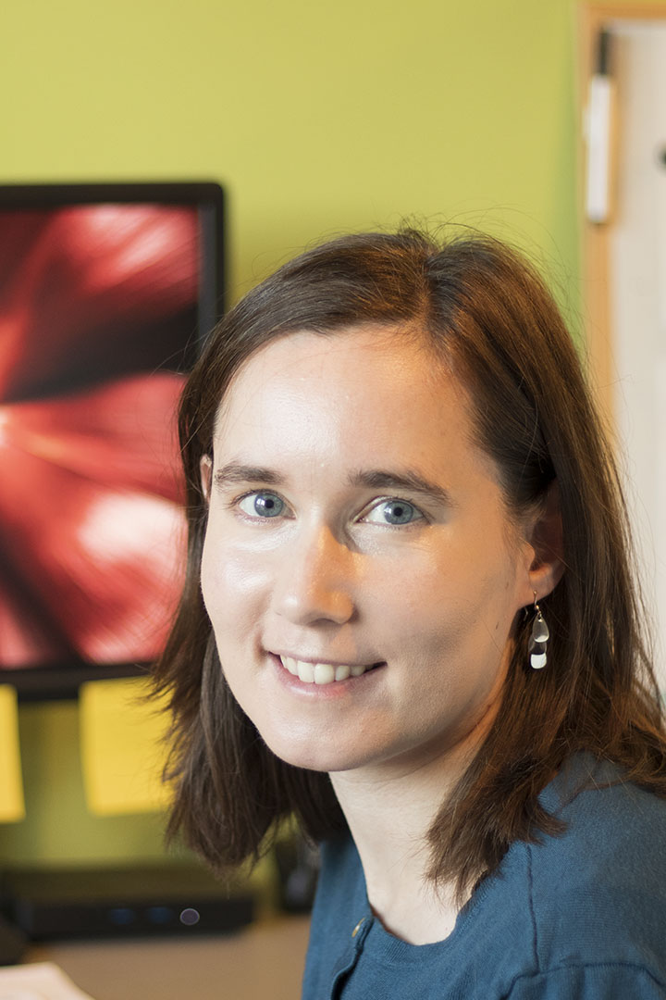
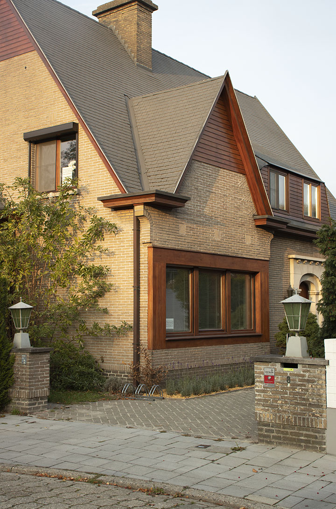

{% set title = "Cleardata - bijscholing" %}
{% set description = "Data-analyse, Statistisch Advies, Bijles Statistiek en Thesisbegeleiding. " %}

{% extends "layout.nunjucks" %} {% block content %}

    <section id="info" class="bg-primary">
        <div class="container">
            <div class="row">
                    <div class="col-md-12 text-center">
                        <h2 class="section-heading">Bijscholing op maat <!-- (vb zie titel ‘tot uw dienst’ bij diensten) --></h2>
                            <hr class="light">
                    </div>
            </div>            

        
        <!--
        ik zou bovenaan de foto van advies en training tonen, zoals bij de oude pagina voorbeeldprojecten het geval was
        -->
        <div class="row">
                <div class="text-faded col-lg-4 hidden-xs hidden-sm text-justify">
                    
                </div>
                <div class="text-faded col-lg-8 text-justify">
                    <p>                                        
                        Wij bieden professionele bijles en studiebegeleiding zonder administratiekosten of verplichtingen in het aantal lesuren. We richten ons voornamelijk op werkstudenten, werknemers en zelfstandigen, maar alle bachelor- en masterstudenten (uit alle studierichtingen) kunnen bij ons terecht.
                    </p>
                    <p>
                        <em>Ineke van Gremberghe</em> (Master in Statistische data-analyse, Doctor in de Wetenschappen en docent) geeft bijles en advies in de volgende onderwerpen, zowel voor een project, (her)examen, paper of thesis:
                    </p>
                    <p>
                        <ul>
                            <li>Algemene statistiek (theorie + praktijk)
                            <li>Algemene data-analyse (theorie + praktijk)
                            <li>Toegepaste data-analyse in <a target="_blank" href="https://www.r-project.org">R</a>, <a target="_blank" href="https://www.ibm.com/analytics/spss-statistics-software">SPSS</a>, <a target="_blank" href="https://www.sas.com/nl_nl/home.html">SAS</a>, <a target="_blank" href="https://www.stata.com/">Stata</a> of <a target="_blank" href="https://www.tibco.com/products/tibco-statistica">Statistica</a>
                            <li>Programmeren in <a target="_blank" href="https://www.r-project.org">R</a>
							<li>Kwantitatieve onderzoeksmethoden
                            <li>Betrouwbaarheidsanalyse en factoranalyse van vragenlijsten
                            <li>Analyse van klinische proeven
							<li>Survival analyse
                            <li>Bepalen van sample size, effect size, power
                            <li>t-test, ANOVA, MANOVA, ANCOVA
                            <li>Lineaire regressie 
                            <li>Logistische regressie (binair of multinomiaal)
                            <li>Analyse van categorische data
                            <li>Multivariate analyse
                            <li>Multilevel, longitudinale en gemengde modellen
                            <li>Mediatie- en moderatieanalyse
                            <li>Paneldata en time series analyse
                            <li>Structural Equation Modeling (SEM) met lavaan
                            <li>Equivalence en non-inferiority studies
                            <li>Verzamelen van data (o.a. studieopzet, steekproefgrootte)
                            <li>Methoden en resultaten voorstellen
                            <li>Interpretatie van statistische analyses
                            <li>Wetenschappelijke reflectie en discussie
                            <li>Opbouw, structuur, schrijfstijl en refereren 
                        </ul>
                    </p>
                </div>
        </div>
        <div class="row" hidden-xs hidden-sm>
            <div style="padding-top: 12pt"></div>
        </div>
        <div class="row">
                <div class="text-faded col-lg-8 text-justify">
                    <p>
                        De begeleiding gebeurt door een ervaren statisticus en wetenschapper met ruime doceerervaring aan de universiteit. Iedere sessie wordt ook grondig voorbereid. Deze standaardvoorbereiding is inbegrepen, echter indien uitgebreide literatuurstudie nodig is wordt dit apart aangerekend. Wij helpen ook met (complexe) statistische analyses niet in bovenstaande lijst, mits aanrekening van de voorbereidingstijd. De meeste klanten zijn na 2 tot 5 sessies geholpen, maar langdurige begeleiding is ook mogelijk.
                    </p>
                    <p>
                        De lessen gaan door in onze thuisbasis te Gent of remote via Skype. Wij zijn zeer vlot 
                        <a target="_blank" href="https://www.google.be/maps/place/ClearData/@51.0367335,3.6915578,17z/data=!3m1!4b1!4m5!3m4!1s0x47c373d5e244c623:0x12ceb2b0b9fe9577!8m2!3d51.0367335!4d3.6937465">
                            bereikbaar
                        </a>
                        per fiets, per trein (15 minuten wandelen van het Gent Sint-Pietersstation), alsook met de wagen (vlakbij R4, E17 en E40 met gratis parkeerplaats).
                    </p>
                    <p>
						Afspraken kunnen gemaakt worden op maandag, dinsdag, vrijdag en zaterdag. Er wordt meestal 2 uur per afspraak voorzien, maar kortere of langere sessies zijn ook mogelijk.
                    </p>
                    <p>
                        Prijs: 60-80 €/uur (<a href="index.nl.html#contact">contacteer ons</a> voor meer informatie en specifieke tarieven)
                    </p>                    
					<p>
                        Vakkennis en ervaring is onze troef! 
                    </p>
                </div>
                <div class="text-faded col-lg-4 hidden-xs hidden-sm text-justify">
                    
                </div>
        </div>
        </div>
    </section>
    
    {% endblock %}